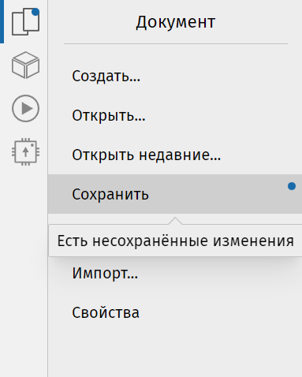

Очень важно часто сохраняться, поэтому стоит научиться делать это сразу. Вернитесь в раздел «Документ» боковой панели и нажмите «Сохранить». Так как документ новый, откроется окно выбора имени для сохранения. Выберите подходящее имя и место для файла и нажмите «Сохранить». Кроме того, работает привычное сочетание Ctrl + S.
Загрузить ранее созданный файл можно в том же разделе «Документ», нажав на кнопку «Открыть», либо на кнопку «Открыть недавние». Последняя кнопка полезна, если Вы хотите быстро получить доступ к недавно открытым документам.
